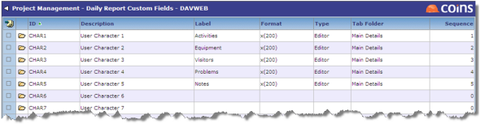

Project Management
Project Management allow you to record the activities of contractors, subcontractors, etc. on a specified date for this project. You can configure the report to show the information you require. The report includes a "Details" section and an optional tab, both of which can show fields you choose.
Detail tab:
- If a second tab for detail is to be used, enter its name using the REPTAB parameter.
- Go to Custom Fields to configure the fields for the detail tab.

- Create a list of trades to record on a . This list is separate from the list of Procurement Trade Codes. Go to Trades.